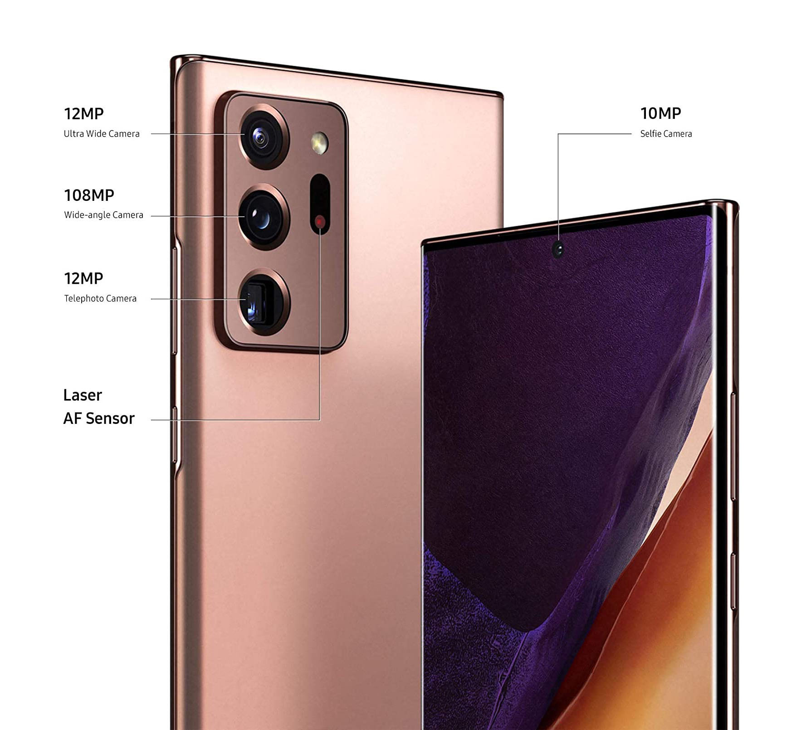

NETWORK Technology
GSM / CDMA / HSPA / EVDO / LTE
LAUNCH Announced 2020, August 05
Status Available. Released 2020, August 21
BODY Dimensions 164.8 x 77.2 x 8.1 mm (6.49 x 3.04 x 0.32 in)
Weight 208 g (7.34 oz)
Build Glass front (Gorilla Glass Victus), glass back (Gorilla Glass Victus), stainless steel frame
SIM Single SIM (Nano-SIM and/or eSIM) or Hybrid Dual SIM (Nano-SIM, dual stand-by)
IP68 dust/water resistant (up to 1.5m for 30 mins)
Stylus, 9ms latency (Bluetooth integration, accelerometer, gyro)
DISPLAY Type Dynamic AMOLED 2X, 120Hz, HDR10+
Size 6.9 inches, 116.7 cm2 (~91.7% screen-to-body ratio)
Resolution 1440 x 3088 pixels (~496 ppi density)
Protection Corning Gorilla Glass Victus
Always-on display
120Hz@FHD/60Hz@QHD refresh rate
PLATFORM OS Android 10, upgradable to Android 11, One UI 3.0
Chipset Exynos 990 (7 nm+) - Global
Qualcomm SM8250 Snapdragon 865+ (7 nm+) - USA
CPU Octa-core (2x2.73 GHz Mongoose M5 & 2x2.50 GHz Cortex-A76 & 4x2.0 GHz Cortex-A55) - Global
Octa-core (1x3.0 GHz Kryo 585 & 3x2.42 GHz Kryo 585 & 4x1.8 GHz Kryo 585) - USA
GPU Mali-G77 MP11 - Global
Adreno 650 - USA
MEMORY Card slot microSDXC (uses shared SIM slot)
Internal 256GB 8GB RAM, 512GB 8GB RAM
UFS 3.0
MAIN CAMERA Triple 108 MP, f/1.8, 26mm (wide), 1/1.33", 0.8µm, PDAF, Laser AF, OIS
12 MP, f/3.0, 120mm (periscope telephoto), 1.0µm, PDAF, OIS, 5x optical zoom, 50x hybrid zoom
12 MP, f/2.2, 120˚, 13mm (ultrawide), 1/2.55", 1.4µm
Features LED flash, auto-HDR, panorama
Video 8K@24fps, 4K@30/60fps, 1080p@30/60/240fps, 720p@960fps, HDR10+, stereo sound rec., gyro-EIS & OIS
SELFIE CAMERA Single 10 MP, f/2.2, 26mm (wide), 1/3.2", 1.22µm, Dual Pixel PDAF
Features Dual video call, Auto-HDR
Video 4K@30/60fps, 1080p@30fps
SOUND Loudspeaker Yes, with stereo speakers
3.5mm jack No
32-bit/384kHz audio
Tuned by AKG
COMMS WLAN Wi-Fi 802.11 a/b/g/n/ac/6, dual-band, Wi-Fi Direct, hotspot
Bluetooth 5.0, A2DP, LE, aptX
GPS Yes, with A-GPS, GLONASS, BDS, GALILEO
NFC Yes
Radio FM radio (Snapdragon model only; market/operator dependent)
USB USB Type-C 3.2, USB On-The-Go
FEATURES Sensors Fingerprint (under display, ultrasonic), accelerometer, gyro, proximity, compass, barometer
Samsung Wireless DeX (desktop experience support)
ANT+
Bixby natural language commands and dictation
Samsung Pay (Visa, MasterCard certified)
Ultra Wideband (UWB) support
BATTERY Type Li-Ion 4500 mAh, non-removable
Charging Fast charging 25W
USB Power Delivery 3.0
Fast Qi/PMA wireless charging 15W
Reverse wireless charging 4.5W
MISC Colors Mystic Bronze, Mystic Black, Mystic White
Models SM-N985F, SM-N985F/DS
SAR 0.57 W/kg (head) 1.02 W/kg (body)
SAR EU 0.32 W/kg (head) 1.47 W/kg (body)
Price $ 1,049.95